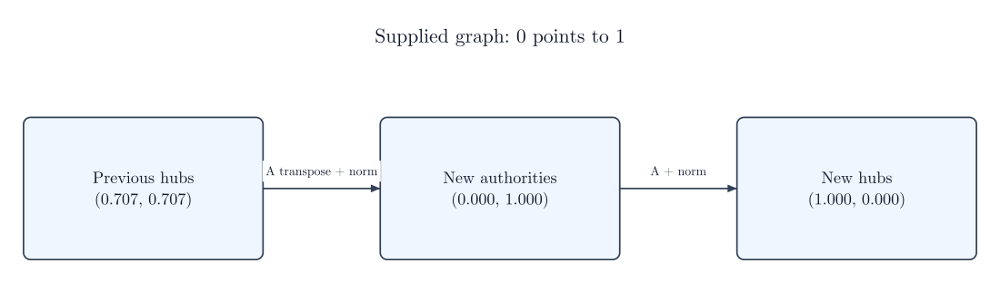
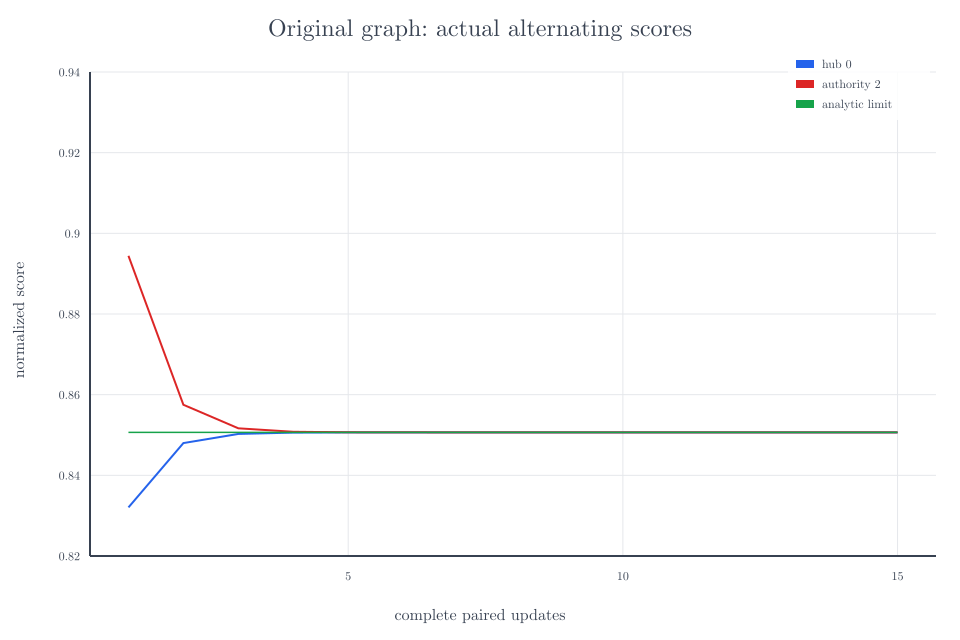
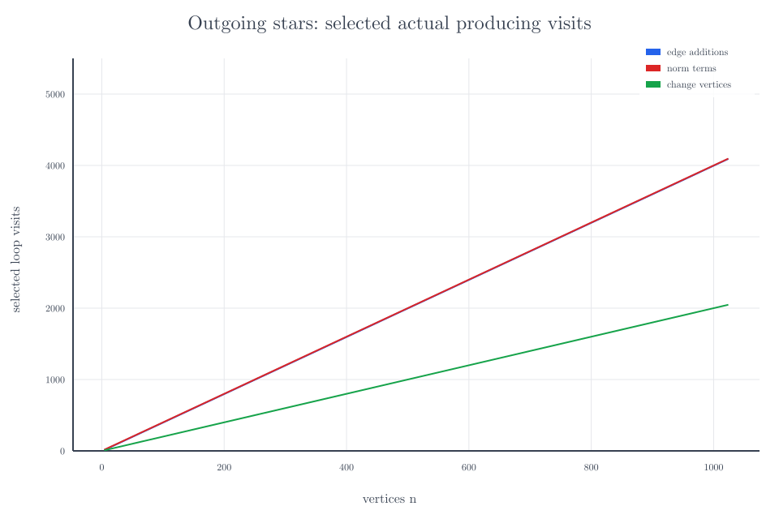
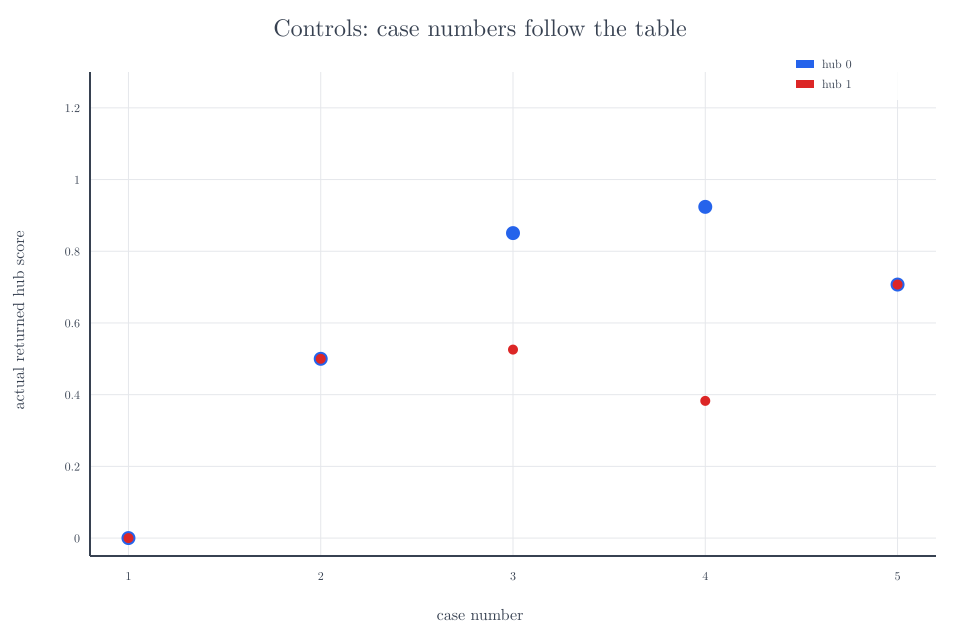

HITS: alternating endorsements, actual histories and degenerate graphs
Abstract
A hub endorses authorities, and an authority receives endorsements from hubs. HITS turns that circular description into alternating matrix products. We calculate a single-edge example, retain the original four-vertex graph and derive its golden-ratio scores, then inspect the actual update history. Edgeless graphs, repeated edges and disconnected ties expose the limits of an unconditional principal-eigenvector interpretation. Native counters distinguish selected producing work from timing and capture overhead.
One edge, two different roles
For the directed edge 0 to 1, both initial vectors are (q,q), with q=1/sqrt(2). The first raw authority vector is (0,q), so normalization gives (0,1). Using these new authorities, the raw and normalized hub vectors are (1,0). The largest change is q; the second paired update changes nothing. The following values and diagram come from those actual producing steps.
#include <dm/dm.hpp>
int main() {
std::filesystem::create_directories("build");
const auto t = dm::algorithms::hits_trace(2, {{0, 1}});
std::print("| paired update | authority norm | hub norm | joint change |\n| ---: | ---: | ---: | ---: |\n");
for (const auto &v : t.steps)
std::print("| {} | {:.9f} | {:.9f} | {:.9f} |\n", v.iteration,
v.authority_norm, v.hub_norm, v.change);
const auto &v = t.steps.front();
dm::graphics::Diagram d(65, 1100);
dm::graphics::DiagramNodeStyle style;
style.width = 4.7;
style.height = 2.8;
style.font_size = 21;
d.node("old", {0, 0},
std::format("Previous hubs\n({:.3f}, {:.3f})", t.initial_hubs[0],
t.initial_hubs[1]), style).node("a", {7, 0},
std::format(
"New authorities\n({:.3f}, {:.3f})",
v.authorities[0],
v.authorities[1]), style).node("h", {14, 0}, std::format("New hubs\n({:.3f}, {:.3f})", v.hubs[0], v.hubs[1]), style).edge("old", "a", "A transpose + norm").edge("a", "h", "A + norm").text({7, 3}, "Supplied graph: 0 points to 1", 25).save_svg("build/hits_tiny.svg");
if (t.steps.size() != 2 || t.run.result.hubs[0] != 1 ||
t.run.result.authorities[1] != 1)
throw std::runtime_error("single edge");
}| paired update | authority norm | hub norm | joint change |
|---|---|---|---|
| 1 | 0.707106781 | 1.000000000 | 0.707106781 |
| 2 | 1.000000000 | 1.000000000 | 0.000000000 |

Derive the matrix iteration and its stopping test
Let A_uv count supplied copies of the edge u to v. Loops and repeated edges are accepted; duplicates act as integer weights. With N(x)=x/|x|_2 for a nonzero vector and N(0)=0, iteration k is
Both initial vectors contain 1/sqrt(n), or are empty for n=0. Normalizing the authority product only scales the subsequent hub product, so whenever products are nonzero the hub direction follows power iteration on AAT. Authorities follow AT h with a half-step offset; A^T A describes their corresponding power operator.
For a symmetric positive-semidefinite operator, a positive gap between its largest eigenvalue and the remaining spectrum gives geometric directional convergence from an initialization having a nonzero dominant projection. Repeated largest eigenvalues allow several dominant directions. The supplied uniform initialization determines a component mixture; small update change alone does not establish uniqueness or relevance of a ranking.
The actual termination test is
The finite positive tolerance is checked before policy caps and allocation. The update budget can be zero: that returns initialization without computing graph scores or applying a stopping test. Each normalization accumulates squared doubles sequentially in vertex order, takes a square root, and divides only for a positive norm. This retains the historical arithmetic order; it is not a scaled norm algorithm or a certified eigenvector solver. Nonfinite tolerance or norm arithmetic is rejected.
The original graph and its closed-form reference
Keep the original edges 0 to 2, 0 to 3, and 1 to 2. Restricting rows to hubs 0,1 and columns to authorities 2,3 gives B=[[1,1],[1,0]]. Therefore BBT=[[2,1],[1,1]], with eigenvalues (3+sqrt(5))/2 and (3-sqrt(5))/2. Its dominant normalized vector is (phi,1)/sqrt(phi2+1), where phi=(1+sqrt(5))/2. Both nonzero hub and authority pairs approach (0.850650808,0.525731112).
The first raw authority pair is (1,1/2); the first normalized hub pair is (3,2)/sqrt(13). In this fixture the subdominant/dominant eigenvalue ratio is about 0.145898, explaining its rapid directional contraction. The plot compares actual recorded values with the derived limit; it does not replace update history with that formula.
#include <dm/dm.hpp>
int main() {
std::filesystem::create_directories("build");
const auto t = dm::algorithms::hits_trace(4, {{0, 2}, {0, 3}, {1, 2}});
const double phi =
(1 + std::sqrt(5.)) / 2, ref = phi / std::sqrt(phi * phi + 1);
std::print("| vertex | actual hubs | actual authorities |\n| ---: | ---: | ---: |\n");
for (std::size_t i = 0; i < 4; ++i)
std::print("| {} | {:.9f} | {:.9f} |\n", i, t.run.result.hubs[i],
t.run.result.authorities[i]);
std::print("\nPaired updates {}; last change {:.4e}; tolerance branch {}.\n",
t.run.result.iterations, t.run.last_change,
t.run.stop == dm::algorithms::HitsStop::Tolerance);
std::vector<double> x, h, a, limit;
std::print("\n| update | joint change | hub-0 absolute reference error | authority-2 absolute reference error |\n| ---: | ---: | ---: | ---: |\n");
for (const auto &step : t.steps) {
x.push_back(step.iteration);
h.push_back(step.hubs[0]);
a.push_back(step.authorities[2]);
limit.push_back(ref);
std::print("| {} | {:.4e} | {:.4e} | {:.4e} |\n", step.iteration,
step.change, std::abs(step.hubs[0] - ref),
std::abs(step.authorities[2] - ref));
}
auto p = dm::graphics::RPlot::create();
p.line(x, h, "hub 0", {37, 99, 235}, 2.).line(x, a, "authority 2",
{220, 38, 38}, 2.).line(
x, limit, "analytic limit", {22, 163, 74}, 1.5).title(
"Original graph: actual alternating scores").x_label(
"complete paired updates").y_label("normalized score").y_limits(.82, .94).save_svg("build/hits_original.svg");
if (std::abs(t.run.result.hubs[0] - ref) > 1e-12 ||
std::abs(t.run.result.authorities[2] - ref) > 1e-12)
throw std::runtime_error("closed form");
}| vertex | actual hubs | actual authorities |
|---|---|---|
| 0 | 0.850650808 | 0.000000000 |
| 1 | 0.525731112 | 0.000000000 |
| 2 | 0.000000000 | 0.850650808 |
| 3 | 0.000000000 | 0.525731112 |
Paired updates 15; last change 8.8918e-13; tolerance branch true.
| update | joint change | hub-0 absolute reference error | authority-2 absolute reference error |
|---|---|---|---|
| 1 | 5.0000e-01 | 1.8601e-02 | 4.3776e-02 |
| 2 | 6.7282e-02 | 2.6525e-03 | 6.8421e-03 |
| 3 | 9.6017e-03 | 3.8566e-04 | 1.0075e-03 |
| 4 | 1.3955e-03 | 5.6239e-05 | 1.4719e-04 |
| 5 | 2.0348e-04 | 8.2045e-06 | 2.1479e-05 |
| 6 | 2.9684e-05 | 1.1970e-06 | 3.1338e-06 |
| 7 | 4.3308e-06 | 1.7464e-07 | 4.5722e-07 |
| 8 | 6.3186e-07 | 2.5480e-08 | 6.6707e-08 |
| 9 | 9.2187e-08 | 3.7175e-09 | 9.7324e-09 |
| 10 | 1.3450e-08 | 5.4237e-10 | 1.4199e-09 |
| 11 | 1.9623e-09 | 7.9131e-11 | 2.0717e-10 |
| 12 | 2.8630e-10 | 1.1545e-11 | 3.0225e-11 |
| 13 | 4.1770e-11 | 1.6844e-12 | 4.4097e-12 |
| 14 | 6.0941e-12 | 2.4580e-13 | 6.4337e-13 |
| 15 | 8.8918e-13 | 3.5860e-14 | 9.3814e-14 |

Producing work and the cost of retaining history
For n vertices, m supplied edge entries and K completed paired updates, the kernel visits Km authority edges and Km hub edges, 2Kn squared norm values and Kn change-test vertices. It divides n values for each nonzero norm. These counters omit validation, initialization, zero-filling, score copying, allocation and trace storage; they are not FLOPs or elapsed time. Including initialization, ordinary execution costs O(n+K(n+m)) time and O(n) working/output storage beyond the borrowed edge list.
The outgoing-star family below supplies edges 0 to every other vertex. It converges after two paired updates at the chosen tolerance. Each row comes from its actual execution; the measured counters illustrate the per-pass bound rather than a universal iteration count.
#include <dm/dm.hpp>
int main() {
std::filesystem::create_directories("build");
std::vector<double> x, edges, norms, changes;
std::print("| n | m | actual K | authority edges | hub edges | norm values | divisions | change vertices |\n| ---: | ---: | ---: | ---: | ---: | ---: | ---: | ---: |\n");
for (std::size_t n : {4, 16, 64, 256, 1024}) {
std::vector<dm::algorithms::HitsEdge> e;
for (std::size_t v = 1; v < n; ++v) e.emplace_back(0, v);
const auto r = dm::algorithms::hits_run(n, e);
const auto &w = r.work;
x.push_back(n);
edges.push_back(w.authority_edges + w.hub_edges);
norms.push_back(w.norm_values);
changes.push_back(w.change_vertices);
std::print("| {} | {} | {} | {} | {} | {} | {} | {} |\n", n, e.size(),
r.result.iterations, w.authority_edges, w.hub_edges,
w.norm_values, w.divisions, w.change_vertices);
if (w.authority_edges != e.size() * r.result.iterations ||
w.norm_values != 2 * n * r.result.iterations)
throw std::runtime_error("work counters");
}
auto p = dm::graphics::RPlot::create();
p.line(x, edges, "edge additions", {37, 99, 235}, 2.).line(x, norms,
"norm terms",
{220, 38, 38}, 2.).line(x, changes, "change vertices", {22, 163, 74}, 2.).title("Outgoing stars: selected actual producing visits").x_label("vertices n").y_label("selected loop visits").y_limits(0, 5500).save_svg("build/hits_work.svg");
}| n | m | actual K | authority edges | hub edges | norm values | divisions | change vertices |
|---|---|---|---|---|---|---|---|
| 4 | 3 | 2 | 6 | 6 | 16 | 16 | 8 |
| 16 | 15 | 2 | 30 | 30 | 64 | 64 | 32 |
| 64 | 63 | 2 | 126 | 126 | 256 | 256 | 128 |
| 256 | 255 | 2 | 510 | 510 | 1024 | 1024 | 512 |
| 1024 | 1023 | 2 | 2046 | 2046 | 4096 | 4096 | 2048 |

Tracing retains 2n initial score values and then one record plus 4n raw/normalized score values per complete iteration. Its logical capture count is 2n+K(1+4n), not bytes or peak RAM. The initial count is admitted before score allocation; each whole record is admitted online before its iteration work. Limits throw rather than truncate or replay. Default vertex, edge-entry and capture caps are each one million; zero disables each policy. The capture cap is ignored by nontracing hits_run. Histories own their vectors and add O(Kn) storage. Legacy hits has no optional policy caps but retains checked counts and container limits.
Controls: zeros, initialization, duplicate weighting and ties
An edgeless graph maps both vectors to zero. With n=4 the first change is 1/2 and the next is zero, so the default call takes two updates. Empty n=0 with a positive budget takes one empty update; zero budget takes none. Returning zero scores is the deliberate zero-norm branch, not a unit dominant eigenvector.
Disconnected equal-strength components can share the dominant eigenvalue. For edges 0 to 2 and 1 to 3, uniform initialization preserves equal hub scores at 0 and 1. Duplicating 0 to 2 in the original graph instead increases its endorsement multiplicity and changes the solution. Self-links are accepted as well. These conventions must match the graph one intends to analyze.
#include <dm/dm.hpp>
int main() {
std::filesystem::create_directories("build");
using E = dm::algorithms::HitsEdge;
const std::vector<std::vector<E>> cases = {{}, {}, {{0, 2}, {0, 3}, {1, 2}},
{{0, 2}, {0, 2}, {0, 3}, {1, 2}},
{{0, 2}, {1, 3}}};
std::vector<double> x, h0, h1;
std::print("| case | budget | iterations | has step | hub 0 | hub 1 |\n| --- | ---: | ---: | --- | ---: | ---: |\n");
const std::vector<std::string> labels = {"edgeless", "initial only",
"original", "duplicate edge",
"tied components"};
for (std::size_t i = 0; i < cases.size(); ++i) {
const std::size_t budget = i == 1 ? 0 : 1000;
const auto r = dm::algorithms::hits_run(4, cases[i], 1e-12, budget);
x.push_back(i + 1);
h0.push_back(r.result.hubs[0]);
h1.push_back(r.result.hubs[1]);
std::print("| {} | {} | {} | {} | {:.9f} | {:.9f} |\n", labels[i],
budget, r.result.iterations, r.has_step, r.result.hubs[0],
r.result.hubs[1]);
}
const auto exact =
dm::algorithms::hits_trace(2, {{0, 1}}, 1e-12, 1, {2, 1, 13});
bool rejected = false;
try {
(void) dm::algorithms::hits_trace(2, {{0, 1}}, 1e-12, 1, {2, 1, 12});
} catch (const std::length_error &) { rejected = true; }
std::print("\nOne-step capture units {}; one-short policy rejected {}; empty graph iterations {}; self-loop score {}.\n",
exact.captured_entries, rejected,
dm::algorithms::hits(0, {}).iterations,
dm::algorithms::hits(1, {{0, 0}}).hubs[0]);
auto p = dm::graphics::RPlot::create();
p.points(x, h0, "hub 0", {37, 99, 235}, 7.).points(x, h1, "hub 1",
{220, 38, 38}, 5.).title(
"Controls: case numbers follow the table").x_label("case number").y_label("actual returned hub score").y_limits(-.05, 1.3).save_svg("build/hits_controls.svg");
if (!rejected || exact.captured_entries != 13)
throw std::runtime_error("capture policy");
}| case | budget | iterations | has step | hub 0 | hub 1 |
|---|---|---|---|---|---|
| edgeless | 1000 | 2 | true | 0.000000000 | 0.000000000 |
| initial only | 0 | 0 | false | 0.500000000 | 0.500000000 |
| original | 1000 | 15 | true | 0.850650808 | 0.525731112 |
| duplicate edge | 1000 | 10 | true | 0.923879533 | 0.382683432 |
| tied components | 1000 | 2 | true | 0.707106781 | 0.707106781 |
One-step capture units 13; one-short policy rejected true; empty graph iterations 1; self-loop score 1.

Validation and reference
The native tests independently reconstruct dense transpose/forward products for all 512 directed binary three-vertex graphs, including loops, and check every captured raw vector, normalization, change and work count. Separate controls check exact and one-short admission, invalid tolerance/endpoints, deep ownership, empty and zero-budget behavior, duplicate edges and the analytic four-vertex solution. ASan/UBSan exercise the producing kernel. Frozen pre-conversion comparisons separately check legacy outputs and iteration counts. Compiled documentation examples, symbol hovers, actual MEP runs, inspected native SVGs and byte-checked Markdown/HTML bundles form the report conversion gates.
The mathematical motivation is [Jon M. Kleinberg, Authoritative Sources in a Hyperlinked Environment](https://www.cs.cornell.edu/home/kleinber/auth.pdf), published in JACM 46(5), 1999, [DOI 10.1145/324133.324140](https://doi.org/10.1145/324133.324140). The paper builds query-focused subgraphs and discusses link heuristics. This report executes only the supplied fixed graph, with the explicit duplicate/self-edge conventions above; it performs no web crawl or query-dependent base-set construction.